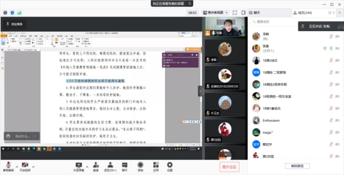

同心抗疫，共克时艰: 物理学院疫情防控工作纪实
当前，国内疫情防控形势严峻复杂，为守护广大干部师生生命和健康安全，把病毒隔离于校门之外，郑州大学于近期在各校区校园实施单独运行的封闭管理。封闭管理实施以来，干部职工扛起责任、主动作为，广大师生理解支持、积极配合，学校整体运行平稳有序，教学科研活动正常开展。为展示广大干部师生在疫情防控工作中的责任与担当，辛勤和付出，我们于即日起开辟“同心抗疫、共克时艰”专栏。在此，我们也希望广大干部师生强化防控意识，持续绷紧思想之弦；严格落实要求，全面做到科学防控；坚定信心决心，切勿过度恐慌焦虑；践行文明理念，养成良好生活习惯；潜心笃行问道，完成教学科研任务。让我们同心坚守，共待春晖，为打赢这场疫情防控战奉献自己的一份力量！
物理学院疫情防控工作纪实
面对复杂多变的防控形势，物理学院党委压实主体责任，认真落实各项防控措施和工作要求；全院师生齐心协力、众志成城，统筹推进疫情防控和事业发展，最大程度减少疫情带来的不利影响。
开好座谈会，全面掌握学生学习生活状态
3月29日，院党委召开两场疫情防控工作专题座谈会。党政主要负责同志和全体辅导员参加会议，本科生、研究生和党员代表参与座谈。会上，学生代表就疫情期间学习、生活情况进行交流发言。他们表示，学校科学研判疫情形势，适时调整防控措施，精准防范疫情风险，常态化安排核酸检测，给大家安心学习创造了良好的条件。学生们畅所欲言，就各项防控措施发表了意见和建议，交谈了感受和体会。会后，党政主要负责同志带领辅导员和青年教师代表走进学生宿舍，慰问全体在校生。
做好思想引领，动员师生履职尽责担当有为
3月18日，本科生分年级召开疫情防控主题班会，介绍学校有关从严做好学生请销假审批工作的通知要求，回顾学生管理相关规章制度，学习《你我同心抗疫，静待樱花盛开——致郑州大学全体师生员工的疫情防控倡议书》，在广大学生中形成”安心学习，就是对疫情防控最大的支持”的思想共识。此外，学院举办了创新实践系列大赛动员会，鼓励青年教师发挥理工并存的优势，利用“赛学育人”的模式，指导学生参与高水平学科竞赛和科技创新，全面提高学生培养质量。
办好服务师生的实事，增强获得感提振精气神
根据疫情要求，学院工会举办“线上美食节”，通过视频展示老师们的“独门”厨艺，活跃了工作氛围，缓解了焦虑情绪。班主任和导师们更是实时在线跟进学生需求，为学业困难学生排解忧愁、为考研学生指导复试、为就业学生搜集信息。辅导员们集中办公，腾出办公室、会议室、学术报告厅共七个场地用于线上复试和答辩。学生党员、学生干部和已推免学生发挥辐射作用组织团日活动等丰富同学们课余生活。电子科学与测控技术系主任张斌老师在完成重大手术后，身体还没有康复就通过电话、微信等途径指导学生团队完成“挑战杯”全国总决赛的终审答辩，得到评审专家高度认可。全院师生用最朴实的感情和行动践行着“求是担当”的校训，为全校疫情防控工作贡献着郑大物理人的坚毅和力量。
作者：zzu